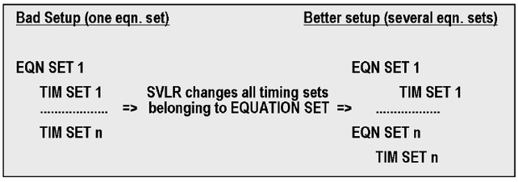

Code Clean-up
Redundant code can slow down your test time.
For example, equation sets that contain lots of spec sets, timing, or level sets slow down spec changes sometimes quite a lot. If you have unused spec or timing or level sets in equation sets, they should be cleaned out.
- Avoid primary set and spec set changes where possible.
- If all spec values are known at development time, use a predefined spec set instead of spec changes.
- Create an "initial" item to do all spec change actions on the first run.
- If only the driver level needs to be changed, use the DRLV Firmware command, or use third level setting instead of driver level change where possible.
- If you only need to change DPS voltages without accessing io-pins, then the SVLR command is faster than switching the level sets or using the PSLV command.
- Use "Vbump" instead of DPS changes if possible.
- If you use the SVLR command, ensure that your equation sets only contains the timing or
level sets that you want to change. If you change only one spec, ensure that your equation
set contains only one timing (or level) set.
Put the other level and timing sets into different equation sets and apply SVLR only to the equation set containing the levels and timings to be changed.
This will avoid SVLR running through all the timing or level sets unnecessarily and save time.
The figure below shows this principle for timing sets. The same applies for level sets.

- Equation sets that contain lots of spec sets, timing, or level sets slow down spec changes, sometimes quite a lot.
- If you have unused spec or timing or level sets in equation sets, they should be cleaned out.
- If a search is a must:
- Use a binary search with small search ranges.
- For the Pin Scale cards, you can use the SEARCH_FUNC_TASK and SEARCH_FUNC_PIN_TASK APIs instead of SPEC_SEARCH API to get parallel efficiency. With the SEARCH_FUNC_TASK and the SEARCH_FUNC_PIN_TASK API you can execute different spec variable, or edge searches in parallel on the Pin Scale system.
- Avoid the use of FLUSH where possible as this also uses up time.
- Avoid any unnecessary ABORT_TEST() APIs wherever possible.
- Re-think your test concept, reduce wait time (WAIT_TIME()), reduce sample size, oversampling rate, optimize pattern length, remove unnecessary code, for example, PPMU .getPassFail vs .getValue).
- Improve your test methods where possible.
It depends on the individual case how the best improvement can be done.
It is good practice where possible to do a test method action only once during first execution of the test flow.
For example:
- Reading a spec-value that does not get changed during the test program execution.
- Expensive consistency check on input parameters to your Test Method.
- Cache data.
static bool wasRun = false; if(!wasRun){ //do your procedure here wasRun = true; } - Try to group firmware commands together wherever possible. For
example:
FW_TASK("RLYC IDLE,OFF,(Dat0);"); FW_TASK("RLYC IDLE,OFF,(Dat1);");can be reduced to:
FW_TASK("RLYC IDLE,OFF,(Dat0); RLYC IDLE,OFF,(Dat1);");or
FW_TASK("RLYC IDLE,OFF,(Dat0,Data1)"); - In general, the use of FLUSH should be kept to a minimum as it can also add to
overhead
EXECUTE_TEST,EXECUTE_GROUP,START_TEST,DIGITAL_CAPTURE_TESTandNB_DIGITAL_CAPTURE_STARTcontain a FLUSH.FUNCTIONAL_TEST()only activates digital primaries such as timing and levels and, therefore, typically has a faster execution time.No FLUSH is required for
trigger(),abort()andgetXXX()/isRunning().